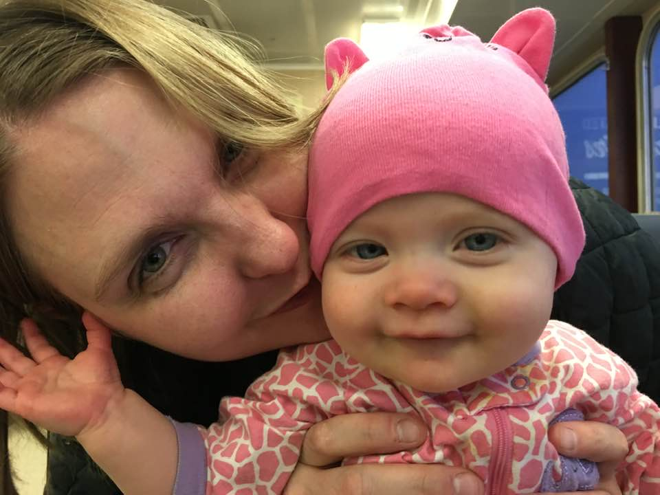

Lauren Sarah Sands
Objective
To elevate others towards their mission and goals.

Education
- 60-Hour Full Stack Web Development Course with the App Brewery's Dr. Angela Yu, Udemy, 2023-2024
- 20-Hour National Mortgage Licensing Exam Preparation Course, Proschools, 2011-2012
- 80-Hour IRS Tax Preparation Course, Liberty Tax, 2011-2012
- Coastguard Approved Captain's Licensing Course for 50 Ton Vessel, Zenith Maritime, 2010
- Naturalist Certification, The Whale Museum, 2009
- Real Estate Investing Seminar and Training, Rich Dad World, 2006-2007
- Accredited Theater Program, Portland Actor's Conservatory, 2003-2005
- Carroll Highschool Graduate, 2002
Work Experience
- Licensed Mortgage Loan Officer with Mortgage Master Service Corporation from August 2015 to November 2022
- Welcomed and assisted homebuyers, orienting them to the homebuying and refinancing process;
gained the trust of buyers in exchange for the honor of helping them with one of the biggest financial transactions of their lives;
provided comprehensive education in navigating the complexities of the financing process;
assisted clients in gathering their personal paperwork for Underwriting including logging in to various accounts, saving/printing-to-pdf and emailing or uploading from there;
designed professional marketing material, event announcements, and educational materials using Canva; kept master calendar and individual client calendars;
provided extensive written and verbal communication to set expectations with all parties including the buyer/homeowner, Processing, Underwriting, Title, Escrow, Appraiser, buyer's real estate agent and seller's real estate agent;
planned, coordinated and set up branch events; wrote branch press releases; monitored and maintained office supplies as necessary; maintained confidentiality of customer's sensitive financial information;
responded to high-volume phone and email inquiries;
maintained detailed online records and physical files for future reference by anyone on our Team
- Licensed Home Loan Officer's Assistant to Julee Felsman at Equity Home Mortgage (now Guaranteed Rate) from July 2012 to July 2014
- Guiding the borrower from origination to close; organizing their paperwork for Underwriting; troubleshooting the automated underwriting system; preparing the file for initial disclosure; pre-underwriting file to ensure borrower preparedness and therefore, approval by Underwriting Department; gathering items conditional for closing; managing timeline to ensure timely close
- Certified Naturalist and Client Education Specialist for San Juan Safaris Orca Whale Watching Tours from April 2010 to August 2011
- Acted as Deckhand and Naturalist leading Orca whale watching tours in the San Juan Islands in WA state; used knowledge of the local wildlife to educate passengers and inspire conservation efforts in their personal lives; booked and took payment for tours; created relationships in the community with strategic partners to increase sales
- Certified Naturalist and Client Education Specialist for San Juan Excursions Orca Whale Watching Tours from April 2010 to September 2010
- Took clients out on 100 ton vessel, acting as deckhand and education specialist, with the intention of inspiring conservation efforts; led emergency efforts in case of running aground or when another nearby vessel was taking on water; cleaned and maintained boat; inspired love of nature in passengers
Skills
- Creating a sense of community for clients in which the business is seen as caring and empathetic to their needs
- Creating a positive and encouraging work environment
- Teaching myself new skills/Internal motivation
- Paying attention to detail, and ability to follow instructions, whether that's analyzing 1,000s of pages of Underwriting requirements or following specifications for web design
- Microsoft Office suites including Excel and Word
- Problem solving and troubleshooting
- Using Canva for design and marketing
- Event planning
- Cold Calling
- Typing
- 10-Key
Contact Me
Hobbies